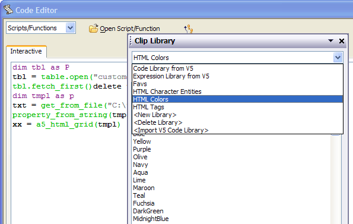
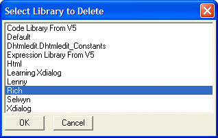
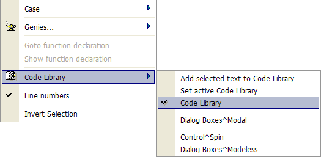
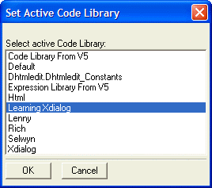
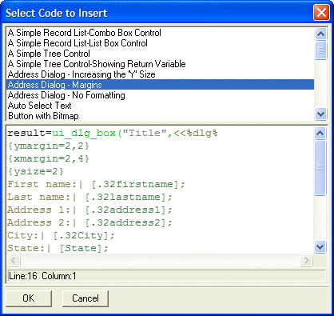
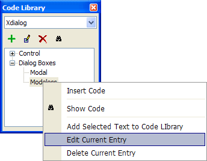
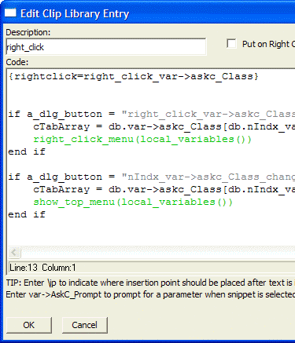
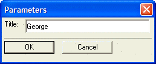
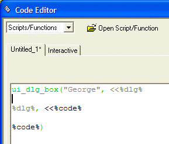
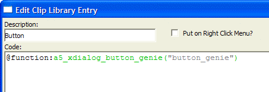

Code Library
The Code Library is a dockable toolbar that stores and organizes an unlimited number of Xbasic and Xdialog code snippets, retrieving and inserting them into your project with just a couple of keystrokes. To display the Code Library :
in the Interactive Window click

select "Code Library" from the drop down menu of the floating window
in the Code Editor you may also select Code > Code Library
The Code Library allows you to create multiple named libraries, each of which may contain a large number of code snippets.

You can create new libraries, delete existing libraries, and import your Alpha Anywhere code library by right clicking on the Code Library window. The following image shows the Select Library to Delete dialog box. Code libraries are saved with a *.clip_lib extension in the code_libraries folder under your Alpha Anywhere program folder.

After opening the Code Editor, either click Code > Code Library... or right click on the window and select Code Library.

The resulting Code Library menu has three sections. The top section contains commands. These three commands will:
Add selected text to the Code Library,
allow you to select the active library, and
hide or display the Code Library window.
When you click Code Library > Set active Code Library, the following dialog appears.

Selecting the Active Code Library
Inserting a Favorite Code Clip
The next section of the Code Library menu is a list of favorites from any code library. Clicking one of these entries inserts the code snippet into the Code Editor at the cursor location.
The largest section at the bottom contains up to 20 of the entries from
the selected code library. Clicking one of these entries inserts the code
snippet into the Code Editor at the cursor location.
Clicking the

The user can add, delete, edit, view, insert, and execute entries in a selected library. Clicking on a library entry can result in three scenarios.
The code will be inserted at the cursor location in the Code Editor.
The code will display one or more dialog boxes to gather variable values and then insert the code.
The code will be executed.
The following images show how to edit a code library entry.

Select Library Entry to Edit in Version 7
You can also select the entry and click  .
.
You can input a new name for the entry or edit the current name in the Description field. A name in the format Group ^ Item will display the entry in a tree control. Item will appear under Group.

Edit Entry and Optionally Add to Favorites List Picture
{kind=link}
Of particular interest is the ability to use character Ask Variables to gather variables when the code is inserted into the script. The following picture shows the code var->AskC_Title. The picture below also shows the \ip function, which sets the cursor insertion point.
To add this entry from the Code Library to your script, place the cursor at the insertion point in the script and click on the Code Library entry. Clicking on the Modal Shell entry (which uses an ask variable) causes the following dialog to appear.

Entering the title and clicking OK pastes the code into the script. Note that the cursor is positioned at the location of the \ip function.

A function call formatted in the following manner will be executed, instead of copied into your Code Editor. Picture
{kind=link}

Alpha Anywhere includes several standard libraries:
HTML Character Entities - inserts the HTML code equivalents of the those characters that are not HTML safe
HTML Colors - inserts the hexadecimal number equivalents of the colors defined in Database_Colors.
HTML Tags - inserts the codes for the various HTML styles
Learning Xdialog - inserts the samples from the Learning Xdialog database
You can create "genies" that are invoked by inserting an entry on the Code Library. i.e. the Code Library can contain Xbasic code that is executed when you double click an entry.
For example, assume you created an entry in the Code Library that looked like this:
|
'@script: dim name as C = "Ed" dim city as C = "Chester" dim company as C = "Alpha Software" code_to_insert = "Hello " + name + " from " + city + " who works at: " + company |
Note that the code snippet must start with '@script: . The code can do anything you want, and when it completes executing the result of the string "code_to_insert" is inserted into the Code Editor at the current insertion point.
The above example is obviously very simplistic because it does not have any user interface. Here is a more practical example:
|
'@script: code_to_insert = a5_connectionstring() |
This would prompt the user for an ADO connection string and insert it into the code.
The Scrapbook is a code library in Alpha Anywhere that acts like the Windows Clipboard. When you paste from the Scrapbook, you always paste the top entry in the Scrapbook. Unlike the Windows Clipboard, you can add many entries to the Scrapbook, and you can open it up to paste older entries.
To paste from the Scrapbook, right click and select Paste
from Scrapbook. Alternatively, open the Code Library by clicking
 , selecting Scrapbook, and clicking
the selected entry.
, selecting Scrapbook, and clicking
the selected entry.
Method One
Open the Code Editor.
Position your cursor in the Code Editor where you want to insert code.
Select Code > Code Library... or click
to display the Code Library.Select a library from the drop-down list box at top.
Double-click on any entry. One of the following actions will occur, depending on how you defined this entry.
The code will be inserted at the cursor location in the Code Editor.
The code will display one or more dialog boxes to gather variable values and then insert the code.
The code will be executed.
Method Two
The right-click Code Library menu contains a list of favorites and a list of up to 20 of the entries from the current code library.
Open the Code Editor.
Position your cursor in the Code Editor where you want to insert code.
Right click on the code window.
Select Code > Library and select the name of the library entry.
The Code Library allows you to create multiple named libraries, each of which may contain a large number of code snippets.
Open the Code Editor.
To display the Code Library, select Code > Code Library... or click
.Select the library of interest from the drop-down list at top and click
 .
.
To add a new entry to the Code Library.
Method One
While viewing the Code Editor, click
to display
the Code Library.Select the library that will receive the new entry.
Select the code segment you wish to save.
Click
 to display the Enter Description
dialog box.
to display the Enter Description
dialog box.Optionally, check Put on Right click menu favorites? .
Enter a description of the new entry and click OK.
M ethod Two
Open the Code Editor.
Select the code to be added.
Click Code > Code Library... or click
.Select the library of interest from the drop-down list at top.
Right click on the Code Library window and select Add Selected Text to Code Library.
Enter a description for the new entry.
Optionally, check Put on Right-Click menu favorites.
Click OK.
Method Three
Open the Code Editor.
Select the code to be added.
Click Code > Code Library... or click
.Select the code segment.
Click
.
Open the Code Editor.
Click Code > Code Library... or click
.Select the library of interest from the drop-down list at top.
Select the code clip of interest from the list box and click
 .
.Optionally, change the Description of the code clip.
Edit the code as desired.
Optionally, check Add to favorites.
Click OK to save your changes or Cancel to discard them.
Open the Code Editor.
Click Code > Code Library... or click
.Select the library of interest from the drop-down list at top.
Select the code clip of interest from the list box.
Click
 .
.Confirm your action by clicking Yes.
Open the Code Editor.
Click Code > Code Library... or click
.Select the library of interest from the drop-down list at top.
Right click on the Code Library window and select Sort > Ascending or Sort > Descending.
Code libraries are saved with a *.clip_lib extension in the code_libraries folder under your Alpha Anywhere program folder.
Open the Code Editor.
Click Code > Code Library... or click
.Select "
" from the drop-down list box at top. Enter the new Code Library Name.
Click OK to continue or Cancel to discard your inputs.
Open the Code Editor.
Click Code > Code Library... or click
.Select "
" from the drop-down list box at top. Select the library to delete from the resulting list.
Click OK and Yes to delete the library or Cancel to quit without any action.
Open the Code Editor.
Click Code > Code Library... or click
.Select "
" from the drop-down list box at top. Optionally, click Yes if the version 5 library was successfully identified.
Optionally, click No.
Navigate to and select the library file.
Click Open.
Using Ask Variables in Code Clips
Of particular interest is the ability to use character Ask Variables to gather variables when the code is inserted into the script. The following picture shows the code var->AskC_Title. The picture below also shows the \ip function, which sets the cursor insertion point.
To add this entry from the Code Library to your script, place the cursor at the insertion point in the script and click on the Code Library entry. Clicking on the "Modal Shell" entry (which uses an ask variable) causes the following dialog to appear.
Entering the title and clicking OK pastes the code into the script. Note that the cursor is positioned at the location of the \ip function.
A function call formatted in the following manner will be executed, instead of copied into your Code Editor. Picture
